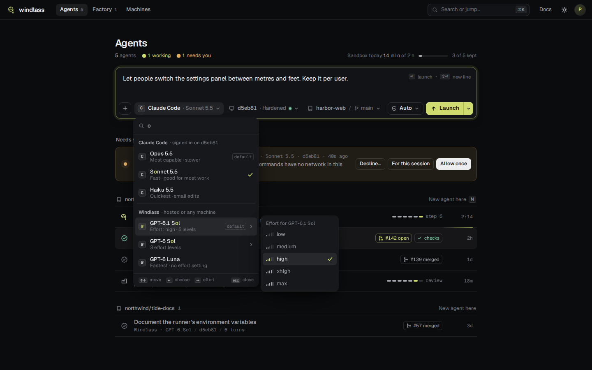
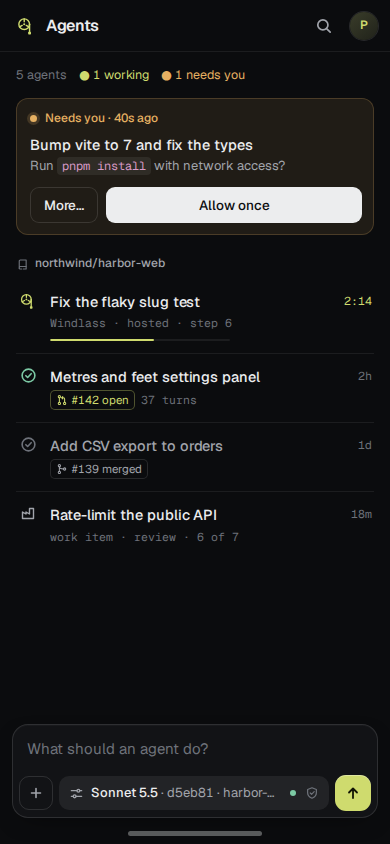
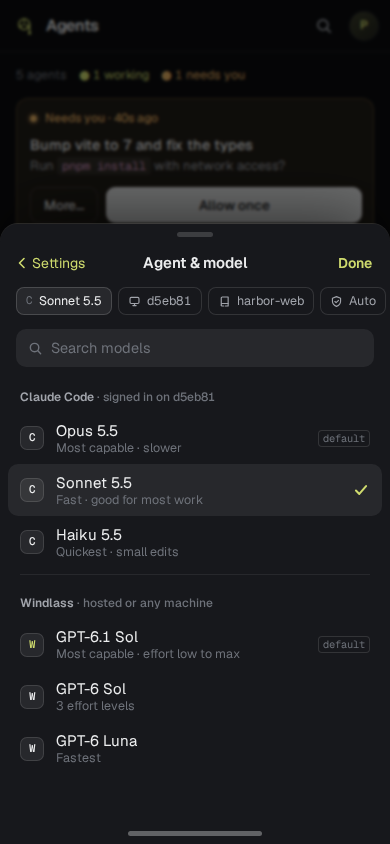
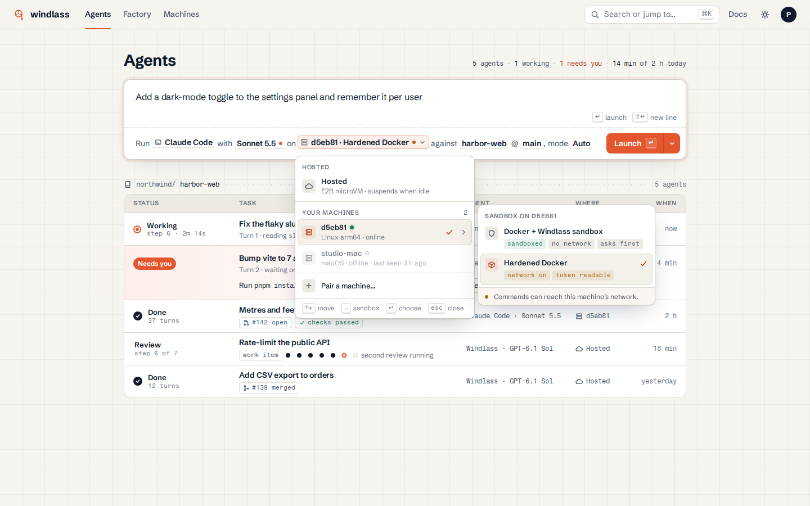
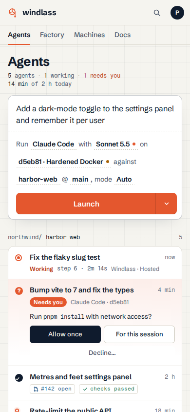
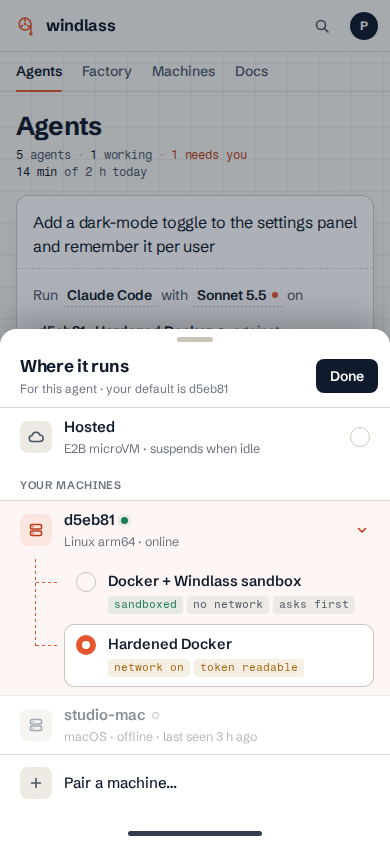
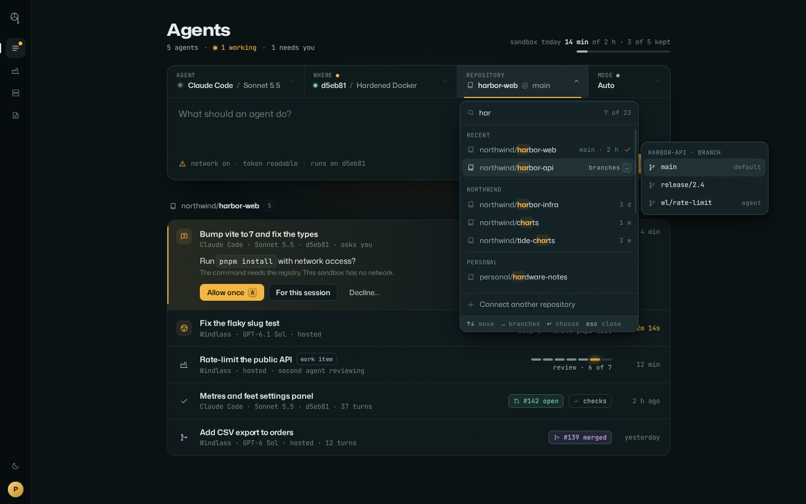
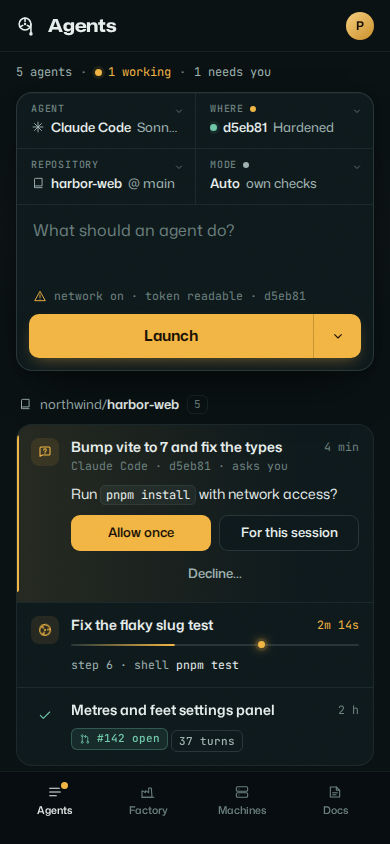
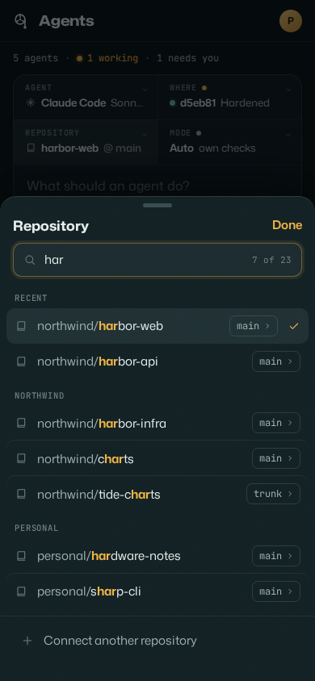

Agents home · picker open · desktop 1440 and phone 390 · each also has a session page and a landing
The instrument panel. Dark-first, dense and calm; pickers live inside the composer as a toolbar, the way the best chat and agent tools do it — made Windlass by the brass accent and the paying-out line.



The route on the chart. Light-first on chart paper with one buoy-orange signal; the composer reads as a sentence — the route the agent will take — and every word of it is a picker.



The lit binnacle. Deep petrol surfaces and one lamp amber; the windlass line is the motif — a rope that pays out down every timeline. The composer is a manifest: four labelled cells, then the task, then a preflight line.


